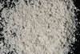

|
|
(For further information on spectroscopy, see:
http://speclab.cr.usgs.gov)
TITLE: Kaolinite CM3 DESCRIPT
DOCUMENTATION_FORMAT: MINERAL
SAMPLE_ID: CM3
MINERAL_TYPE: Phyllosilicate
MINERAL: Kaolinite (Kaolinite-Serpentine group)
FORMULA: Al2Si2O5(OH)4
FORMULA_HTML: Al2Si2O5(OH)4
COLLECTION_LOCALITY: Macon, GA
ORIGINAL_DONOR: Clay Mineral Standard from Wards Natural Science Inc.
CURRENT_SAMPLE_LOCATION: USGS Denver Spectroscopy Laboratory
ULTIMATE_SAMPLE_LOCATION: USGS Denver Spectroscopy Laboratory
SAMPLE_DESCRIPTION:
Polymorphous with Dickite, Halloysite, and Nacrite.
IMAGE_OF_SAMPLE:

END_SAMPLE_DESCRIPTION.
XRD_ANALYSIS:
Kaolinite partially ordered, less then 2µm fraction is pure (Norma Vergo)
END_XRD_ANALYSIS.
COMPOSITIONAL_ANALYSIS_TYPE: XRF # XRF, EM(WDS), ICP(Trace), WChem
| COMPOSITION KEYWORD |
Oxide ASCII |
Amount | Weight Percent, % |
Oxide html |
|---|---|---|---|---|
| COMPOSITION: | SiO2 | 45.0 | wt% | SiO2 |
| COMPOSITION: | TiO2 | 1.54 | wt% | TiO2 |
| COMPOSITION: | Al2O3 | 37.9 | wt% | Al2O3 |
| COMPOSITION: | Fe2O3 | 0.32 | wt% | Fe2O3 |
| COMPOSITION: | FeO | less than 0.01 | wt% | FeO |
| COMPOSITION: | MnO | less than 0.02 | wt% | MnO |
| COMPOSITION: | MgO | 0.20 | wt% | MgO |
| COMPOSITION: | CaO | 0.06 | wt% | CaO |
| COMPOSITION: | Na2O | less than 0.15 | wt% | Na2O |
| COMPOSITION: | K2O | 0.06 | wt% | K2O |
| COMPOSITION: | P2O5 | 0.05 | wt% | P2O5 |
| COMPOSITION: | H2O+ | 13.7 | wt% | H2O+ |
| COMPOSITION: | H2O- | 0.63 | wt% | H2O- |
| COMPOSITION: | H2O | 14.3 | wt% | H2O |
| COMPOSITION: | LOI | 14.1 | wt% | LOI |
| COMPOSITION: | Total | 98.90 | wt% | |
| COMPOSITION: | O=Cl,F,S | wt% | #correction for Cl, F, S | |
| COMPOSITION: | New Total | wt% |
COMPOSITION_TRACE:
COMPOSITION_DISCUSSION:
XRF Analysis by Branch of Analytical Chemistry, USGS, Denver. Total above includes LOI value rather than H2O values, and does not include value for FeO as it was determined at same time as H2O. Trace analysis was performed and will be added later.
END_COMPOSITION_DISCUSSION.
MICROSCOPIC_EXAMINATION:
END_MICROSCOPIC_EXAMINATION.
SPECTROSCOPIC_DISCUSSION:
END_SPECTROSCOPIC_DISCUSSION.
SPECTRAL_PURITY: 1a2a3a4_ # 1= 0.2-3, 2= 1.5-6, 3= 6-25, 4= 20-150 microns
| LIB_SPECTRA_HED: | where | Wave Range | Av_Rs_Pwr | Comment |
|---|---|---|---|---|
| LIB_SPECTRA: | splib04a r 2585 | 0.2-3.0µm | 200 | g.s.= |
| LIB_SPECTRA: | splib05a r 3857 | 0.2-3.0µm | 200 | g.s.= |
| LIB_SPECTRA: | splib06a r 11788 | g.s.= | ||
| LIB_SPECTRA: | splib06a r 11802 | g.s.= |
{kind=link}